TensorFlow基礎¶
本章介紹TensorFlow的基本操作。
前置知識
Python基本操作 （賦值、分支及循環語句、使用import導入庫）；
NumPy ，Python下常用的科學計算庫。TensorFlow與之結合緊密；
線性回歸 ；
梯度下降方法 求函數的局部最小值。
 ）；
）；TensorFlow 1+1¶
我們可以先簡單地將TensorFlow視爲一個科學計算庫（類似於Python下的NumPy）。
首先，我們導入TensorFlow：
import tensorflow as tf
警告
本手冊基於TensorFlow的即時執行模式（Eager Execution）。在TensorFlow 1.X版本中， 必須 在導入TensorFlow庫後調用 tf.enable_eager_execution() 函數以啓用即時執行模式。在 TensorFlow 2 中，即時執行模式將成爲默認模式，無需額外調用 tf.enable_eager_execution() 函數（不過若要關閉即時執行模式，則需調用 tf.compat.v1.disable_eager_execution() 函數）。
TensorFlow使用 張量 （Tensor）作爲數據的基本單位。TensorFlow的張量在概念上等同於多維數組，我們可以使用它來描述數學中的標量（0維數組）、向量（1維數組）、矩陣（2維數組）等各種量，示例如下：
# 定义一个随机数（标量）
random_float = tf.random.uniform(shape=())
# 定义一个有2个元素的零向量
zero_vector = tf.zeros(shape=(2))
# 定义两个2×2的常量矩阵
A = tf.constant([[1., 2.], [3., 4.]])
B = tf.constant([[5., 6.], [7., 8.]])
張量的重要屬性是其形狀、類型和值。可以通過張量的 shape 、 dtype 屬性和 numpy() 方法獲得。例如：
# 查看矩阵A的形状、类型和值
print(A.shape) # 输出(2, 2)，即矩阵的长和宽均为2
print(A.dtype) # 输出<dtype: 'float32'>
print(A.numpy()) # 输出[[1. 2.]
# [3. 4.]]
小技巧
TensorFlow的大多數API函數會根據輸入的值自動推斷張量中元素的類型（一般默認爲 tf.float32 ）。不過你也可以通過加入 dtype 參數來自行指定類型，例如 zero_vector = tf.zeros(shape=(2), dtype=tf.int32) 將使得張量中的元素類型均爲整數。張量的 numpy() 方法是將張量的值轉換爲一個NumPy數組。
TensorFlow里有大量的 操作 （Operation），使得我們可以將已有的張量進行運算後得到新的張量。示例如下：
C = tf.add(A, B) # 计算矩阵A和B的和
D = tf.matmul(A, B) # 计算矩阵A和B的乘积
操作完成後， C 和 D 的值分別爲:
tf.Tensor(
[[ 6. 8.]
[10. 12.]], shape=(2, 2), dtype=float32)
tf.Tensor(
[[19. 22.]
[43. 50.]], shape=(2, 2), dtype=float32)
可見，我們成功使用 tf.add() 操作計算出 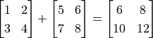，使用 tf.matmul() 操作計算出 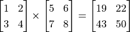 。
自動求導機制¶
在機器學習中，我們經常需要計算函數的導數。TensorFlow提供了強大的 自動求導機制 來計算導數。在即時執行模式下，TensorFlow引入了 tf.GradientTape() 這個「求導記錄器」來實現自動求導。以下代碼展示了如何使用 tf.GradientTape() 計算函數  在
在  時的導數：
時的導數：
import tensorflow as tf
x = tf.Variable(initial_value=3.)
with tf.GradientTape() as tape: # 在 tf.GradientTape() 的上下文内，所有计算步骤都会被记录以用于求导
y = tf.square(x)
y_grad = tape.gradient(y, x) # 计算y关于x的导数
print(y, y_grad)
輸出:
tf.Tensor(9.0, shape=(), dtype=float32)
tf.Tensor(6.0, shape=(), dtype=float32)
這裡 x 是一個初始化爲3的 變量 （Variable），使用 tf.Variable() 聲明。與普通張量一樣，變量同樣具有形狀、類型和值三種屬性。使用變量需要有一個初始化過程，可以通過在 tf.Variable() 中指定 initial_value 參數來指定初始值。這裡將變量 x 初始化爲 3. 1。變量與普通張量的一個重要區別是其默認能夠被TensorFlow的自動求導機制所求導，因此往往被用於定義機器學習模型的參數。
tf.GradientTape() 是一個自動求導的記錄器。只要進入了 with tf.GradientTape() as tape 的上下文環境，則在該環境中計算步驟都會被自動記錄。比如在上面的示例中，計算步驟 y = tf.square(x) 即被自動記錄。離開上下文環境後，記錄將停止，但記錄器 tape 依然可用，因此可以通過 y_grad = tape.gradient(y, x) 求張量 y 對變量 x 的導數。
在機器學習中，更加常見的是對多元函數求偏導數，以及對向量或矩陣的求導。這些對於TensorFlow也不在話下。以下代碼展示了如何使用 tf.GradientTape() 計算函數 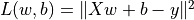 在 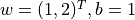 時分別對 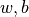 的偏導數。其中 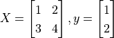。
X = tf.constant([[1., 2.], [3., 4.]])
y = tf.constant([[1.], [2.]])
w = tf.Variable(initial_value=[[1.], [2.]])
b = tf.Variable(initial_value=1.)
with tf.GradientTape() as tape:
L = tf.reduce_sum(tf.square(tf.matmul(X, w) + b - y))
w_grad, b_grad = tape.gradient(L, [w, b]) # 计算L(w, b)关于w, b的偏导数
print(L, w_grad, b_grad)
輸出:
tf.Tensor(125.0, shape=(), dtype=float32)
tf.Tensor(
[[ 70.]
[100.]], shape=(2, 1), dtype=float32)
tf.Tensor(30.0, shape=(), dtype=float32)
這裡， tf.square() 操作代表對輸入張量的每一個元素求平方，不改變張量形狀。 tf.reduce_sum() 操作代表對輸入張量的所有元素求和，輸出一個形狀爲空的純量張量（可以通過 axis 參數來指定求和的維度，不指定則默認對所有元素求和）。TensorFlow中有大量的張量操作API，包括數學運算、張量形狀操作（如 tf.reshape()）、切片和連接（如 tf.concat()）等多種類型，可以通過查閱TensorFlow的官方API文檔 2 來進一步了解。
從輸出可見，TensorFlow幫助我們計算出了
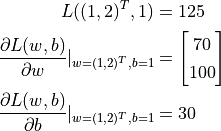
基礎示例：線性回歸¶
基礎知識和原理
UFLDL教程 Linear Regression 一節。
考慮一個實際問題，某城市在2013年-2017年的房價如下表所示：
年份 |
2013 |
2014 |
2015 |
2016 |
2017 |
房價 |
12000 |
14000 |
15000 |
16500 |
17500 |
現在，我們希望通過對該數據進行線性回歸，即使用線性模型  來擬合上述數據，此處
來擬合上述數據，此處 a 和 b 是待求的參數。
首先，我們定義數據，進行基本的歸一化操作。
import numpy as np
X_raw = np.array([2013, 2014, 2015, 2016, 2017], dtype=np.float32)
y_raw = np.array([12000, 14000, 15000, 16500, 17500], dtype=np.float32)
X = (X_raw - X_raw.min()) / (X_raw.max() - X_raw.min())
y = (y_raw - y_raw.min()) / (y_raw.max() - y_raw.min())
接下來，我們使用梯度下降方法來求線性模型中兩個參數 a 和 b 的值 3。
回顧機器學習的基礎知識，對於多元函數  求局部極小值，梯度下降 的過程如下：
求局部極小值，梯度下降 的過程如下：
初始化自變量爲
 ，
， 
疊代進行下列步驟直到滿足收斂條件：
求函數
關於自變量的梯度 
更新自變量： 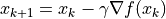 。這裡
 是學習率（也就是梯度下降一次邁出的「步子」大小）
是學習率（也就是梯度下降一次邁出的「步子」大小）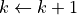
接下來，我們考慮如何使用程序來實現梯度下降方法，求得線性回歸的解 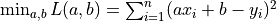 。
NumPy下的線性回歸¶
機器學習模型的實現並不是TensorFlow的專利。事實上，對於簡單的模型，即使使用常規的科學計算庫或者工具也可以求解。在這裡，我們使用NumPy這一通用的科學計算庫來實現梯度下降方法。NumPy提供了多維數組支持，可以表示向量、矩陣以及更高維的張量。同時，也提供了大量支持在多維數組上進行操作的函數（比如下面的 np.dot() 是求內積， np.sum() 是求和）。在這方面，NumPy和MATLAB比較類似。在以下代碼中，我們手工求損失函數關於參數 a 和 b 的偏導數 4，並使用梯度下降法反覆疊代，最終獲得 a 和 b 的值。
a, b = 0, 0
num_epoch = 10000
learning_rate = 5e-4
for e in range(num_epoch):
# 手动计算损失函数关于自变量（模型参数）的梯度
y_pred = a * X + b
grad_a, grad_b = 2 * (y_pred - y).dot(X), 2 * (y_pred - y).sum()
# 更新参数
a, b = a - learning_rate * grad_a, b - learning_rate * grad_b
print(a, b)
然而，你或許已經可以注意到，使用常規的科學計算庫實現機器學習模型有兩個痛點：
經常需要手工求函數關於參數的偏導數。如果是簡單的函數或許還好，但一旦函數的形式變得複雜（尤其是深度學習模型），手工求導的過程將變得非常痛苦，甚至不可行。
經常需要手工根據求導的結果更新參數。這裡使用了最基礎的梯度下降方法，因此參數的更新還較爲容易。但如果使用更加複雜的參數更新方法（例如Adam或者Adagrad），這個更新過程的編寫同樣會非常繁雜。
而TensorFlow等深度學習框架的出現很大程度上解決了這些痛點，爲機器學習模型的實現帶來了很大的便利。
TensorFlow下的線性回歸¶
TensorFlow的 即時執行模式 5 與上述NumPy的運行方式十分類似，然而提供了更快速的運算（GPU支持）、自動求導、優化器等一系列對深度學習非常重要的功能。以下展示了如何使用TensorFlow計算線性回歸。可以注意到，程序的結構和前述NumPy的實現非常類似。這裡，TensorFlow幫助我們做了兩件重要的工作：
使用
tape.gradient(ys, xs)自動計算梯度；使用
optimizer.apply_gradients(grads_and_vars)自動更新模型參數。
X = tf.constant(X)
y = tf.constant(y)
a = tf.Variable(initial_value=0.)
b = tf.Variable(initial_value=0.)
variables = [a, b]
num_epoch = 10000
optimizer = tf.keras.optimizers.SGD(learning_rate=5e-4)
for e in range(num_epoch):
# 使用tf.GradientTape()记录损失函数的梯度信息
with tf.GradientTape() as tape:
y_pred = a * X + b
loss = tf.reduce_sum(tf.square(y_pred - y))
# TensorFlow自动计算损失函数关于自变量（模型参数）的梯度
grads = tape.gradient(loss, variables)
# TensorFlow自动根据梯度更新参数
optimizer.apply_gradients(grads_and_vars=zip(grads, variables))
print(a, b)
在這裡，我們使用了前文的方式計算了損失函數關於參數的偏導數。同時，使用 tf.keras.optimizers.SGD(learning_rate=5e-4) 聲明了一個梯度下降 優化器 （Optimizer），其學習率爲5e-4。優化器可以幫助我們根據計算出的求導結果更新模型參數，從而最小化某個特定的損失函數，具體使用方式是調用其 apply_gradients() 方法。
注意到這裡，更新模型參數的方法 optimizer.apply_gradients() 需要提供參數 grads_and_vars，即待更新的變量（如上述代碼中的 variables ）及損失函數關於這些變量的偏導數（如上述代碼中的 grads ）。具體而言，這裡需要傳入一個Python列表（List），列表中的每個元素是一個 （變量的偏導數，變量） 對。比如上例中需要傳入的參數是 [(grad_a, a), (grad_b, b)] 。我們通過 grads = tape.gradient(loss, variables) 求出tape中記錄的 loss 關於 variables = [a, b] 中每個變量的偏導數，也就是 grads = [grad_a, grad_b]，再使用Python的 zip() 函數將 grads = [grad_a, grad_b] 和 variables = [a, b] 拼裝在一起，就可以組合出所需的參數了。
Python的 zip() 函數
zip() 函數是Python的內置函數。用自然語言描述這個函數的功能很繞口，但如果舉個例子就很容易理解了：如果 a = [1, 3, 5]， b = [2, 4, 6]，那麼 zip(a, b) = [(1, 2), (3, 4), ..., (5, 6)] 。即「將可疊代的對象作爲參數，將對象中對應的元素打包成一個個元組，然後返回由這些元組組成的列表」，和我們日常生活中拉上拉鏈（zip）的操作有異曲同工之妙。在Python 3中， zip() 函數返回的是一個 zip 對象，本質上是一個生成器，需要調用 list() 來將生成器轉換成列表。

Python的 zip() 函數圖示¶
在實際應用中，我們編寫的模型往往比這裡一行就能寫完的線性模型 y_pred = a * X + b （模型參數爲 variables = [a, b] ）要複雜得多。所以，我們往往會編寫並實例化一個模型類 model = Model() ，然後使用 y_pred = model(X) 調用模型，使用 model.variables 獲取模型參數。關於模型類的編寫方式可見 “TensorFlow模型”一章。
- 1
Python中可以使用整數後加小數點表示將該整數定義爲浮點數類型。例如
3.代表浮點數3.0。- 2
主要可以參考 Tensor Transformations 和 Math 兩個頁面。可以注意到，TensorFlow的張量操作API在形式上和Python下流行的科學計算庫NumPy非常類似，如果對後者有所了解的話可以快速上手。
- 3
其實線性回歸是有解析解的。這裡使用梯度下降方法只是爲了展示TensorFlow的運作方式。
- 4
此處的損失函數爲均方誤差 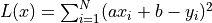。其關於參數
a和b的偏導數爲 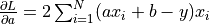，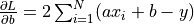 。本例中 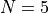 。由於均方誤差取均值的係數 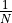 在訓練過程中一般爲常數（ 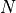 一般爲批次大小），對損失函數乘以常數等價於調整學習率，因此在具體實現時通常不寫在損失函數中。- 5
與即時執行模式相對的是圖執行模式（Graph Execution），即 TensorFlow 2 之前所主要使用的執行模式。本手冊以面向快速疊代開發的即時執行模式爲主，但會在 附錄 中介紹圖執行模式的基本使用，供需要的讀者查閱。